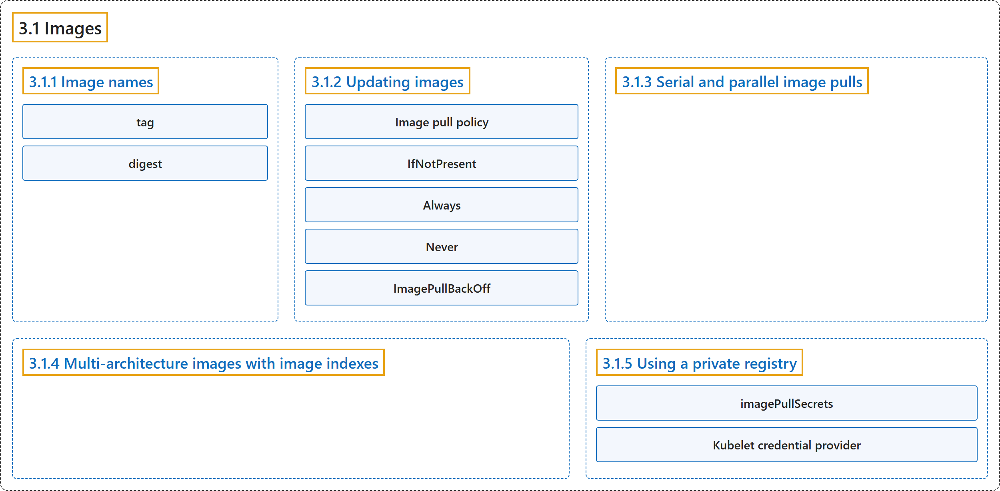

3.1 Images
Classification

Glossary
| Term | Definition | 中文翻译 | Source |
|---|---|---|---|
| 3.1 Images 镜像 |
"A container image represents binary data that encapsulates an application and all its software dependencies." | 容器镜像代表二进制数据，封装了应用程序及其全部软件依赖。 | The Kubernetes Authors, n.d., "Images", para. 1 |
| 3.1.1 Image names 镜像名称 |
(context) "Container images are usually given a name such as pause, example/mycontainer, or kube-apiserver." |
（语境）容器镜像通常会被赋予一个名称，例如 pause、example/mycontainer 或 kube-apiserver。 |
The Kubernetes Authors, n.d., "Image names", para. 1 |
| tag 标签 |
(context) "After the image name part you can add a tag or digest (in the same way you would when using with commands like docker or podman)." |
（语境）在镜像名称之后，你可以加上一个标签或摘要（与使用 docker 或 podman 等命令时的方式相同）。 |
The Kubernetes Authors, n.d., "Image names", para. 3 |
| digest 摘要 |
(context) "After the image name part you can add a tag or digest (in the same way you would when using with commands like docker or podman)." |
（语境）在镜像名称之后，你可以加上一个标签或摘要（与使用 docker 或 podman 等命令时的方式相同）。 |
The Kubernetes Authors, n.d., "Image names", para. 3 |
| 3.1.2 Updating images 更新镜像 |
(No definition) | （无定义） | The Kubernetes Authors, n.d., "Updating images" |
| Image pull policy 镜像拉取策略 |
"The imagePullPolicy for a container and the tag of the image both affect when the kubelet attempts to pull (download) the specified image." |
容器的 imagePullPolicy 和镜像的标签都会影响 何时 kubelet 会尝试拉取指定的镜像（即下载）。 |
The Kubernetes Authors, n.d., "Image pull policy", para. 1 |
| IfNotPresent IfNotPresent |
"the image is pulled only if it is not already present locally." | 镜像只会被拉取，前提是它在本地尚不存在。 | The Kubernetes Authors, n.d., "Image pull policy", para. 4 |
| Always Always |
"every time the kubelet launches a container, the kubelet requests the container runtime to pull the image." | 每次 kubelet 启动容器时，kubelet 都会请求容器运行时拉取镜像。 | The Kubernetes Authors, n.d., "Image pull policy", para. 6 |
| Never Never |
"the kubelet does not try fetching the image." | kubelet 不会尝试获取镜像。 | The Kubernetes Authors, n.d., "Image pull policy", para. 8 |
| ImagePullBackOff ImagePullBackOff |
"The status ImagePullBackOff means that a container could not start because Kubernetes could not pull a container image" |
状态 ImagePullBackOff 表示容器无法启动，因为 Kubernetes 无法拉取容器镜像 |
The Kubernetes Authors, n.d., "ImagePullBackOff", para. 2 |
| 3.1.3 Serial and parallel image pulls 串行与并行镜像拉取 |
"By default, the kubelet pulls images serially." | 默认情况下，kubelet 拉取镜像是串行的。 | The Kubernetes Authors, n.d., "Serial and parallel image pulls", para. 1 |
| 3.1.4 Multi-architecture images with image indexes 使用镜像索引的多架构镜像 |
(context) "As well as providing binary images, a container registry can also serve a container image index." | （语境）除了提供二进制镜像，容器镜像仓库还可以提供容器镜像索引。 | The Kubernetes Authors, n.d., "Multi-architecture images with image indexes", para. 1 |
| 3.1.5 Using a private registry 使用私有镜像仓库 |
"Private registries may require authentication to be able to discover and/or pull images from them." | 私有镜像仓库可能需要认证，才能从中发现和/或拉取镜像。 | The Kubernetes Authors, n.d., "Using a private registry", para. 1 |
| imagePullSecrets imagePullSecrets |
(context) "Kubernetes supports specifying container image registry keys on a Pod." | （语境）Kubernetes 支持指定 Pod 上的容器镜像仓库密钥。 | The Kubernetes Authors, n.d., "Note:", para. 2 |
| Kubelet credential provider kubelet 凭据提供程序 |
"You can configure the kubelet to invoke a plugin binary to dynamically fetch registry credentials for a container image." | 你可以配置 kubelet，让它调用一个插件二进制程序，以为容器镜像动态获取镜像仓库凭据。 | The Kubernetes Authors, n.d., "Kubelet credential provider for authenticated image pulls", para. 1 |
References
The Kubernetes Authors. (n.d.). Images. Kubernetes Documentation. Retrieved October 31, 2026, from https://kubernetes.io/docs/concepts/containers/images/